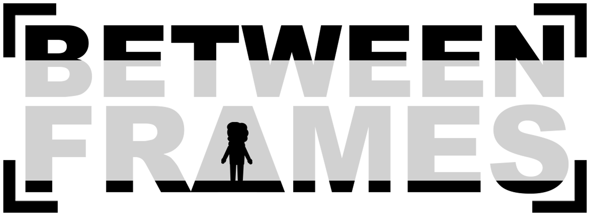

Description
Between Frames is a platform puzzle game using unique film-media based mechanics to tell the story of an old man's grief.
History
Between Frames started as the capstone final project for a group of games and interactivity and software engineering students at Swinburne University of Technology in Melbourne, Australia. Initially the game was simply an idea about using film mechanics to make interesting 2D level manipulation puzzles, but eventually grew to encompass a narrative about processing grief through art.
Features
- Unique mechanics designed around movie making techniques.
- Levels designed to incorporate metaphor in every detail.
Videos
Teaser Trailer — YouTube
Images
{kind=link}
{kind=link}
{kind=link}
Logo & Icon
{kind=link}
Selected Articles
-
"There is no feeling more satisfying than watching a player have their eureka moment.","Three years of experience and study culminated into a tangible project. Except this time, I donned a pair of binoculars and a megaphone to work with.","What it feels like to chew 5 gum","It just works.","In the beginning the game was created. This has made a lot of people confused and been widely regarded as a weird move."
Jackson Bloomfield,Tony Lam,Goshen Kiel Telan,David Quoc Nguyen,Ben Robertson,
About Water Bottle Games
- Boilerplate
- More information
- More information on Water Bottle Games, our logo & relevant media are available here.
Between Frames Credits
- Ben Robertson,David Quoc Nguyen,Goshen Kiel Telan,Jackson Bloomfield,James Radcliffe,Matt Coulter,Tony Lam,Yue Cao
- Narrative Designer,Programmer,Sound Designer / Programmer,Level Designer / 3D Animation,3D Artist / Materials,Lead Programmer,Project Manager / Designer,2D Artist / Sound Designer